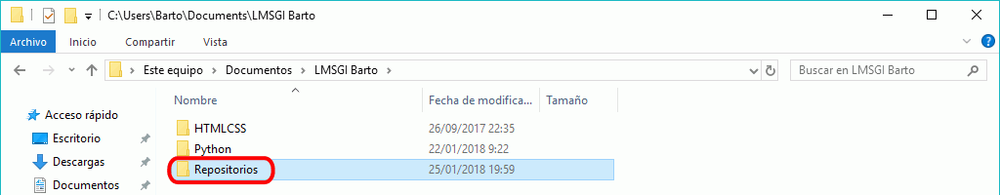
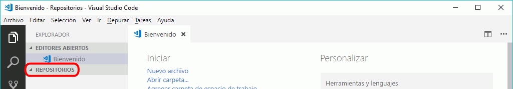
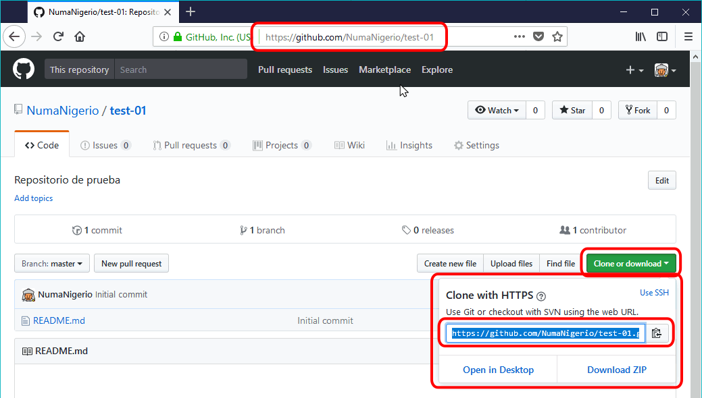
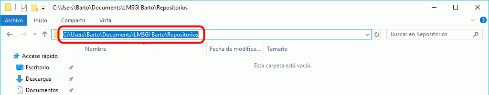
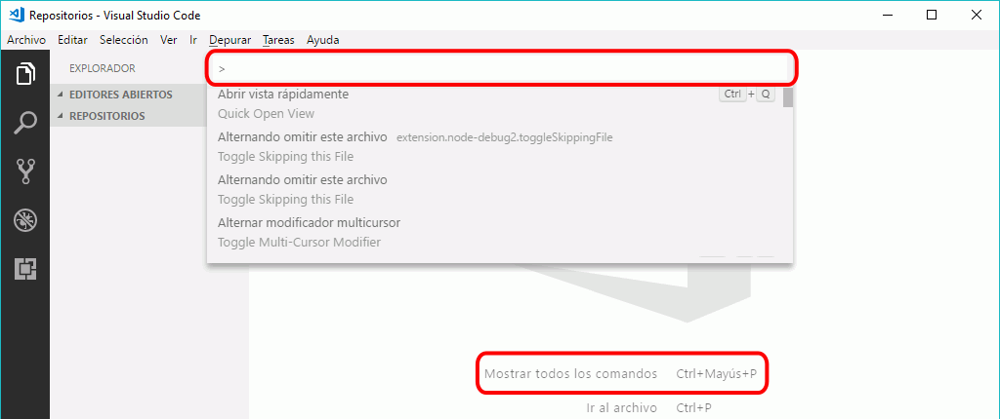
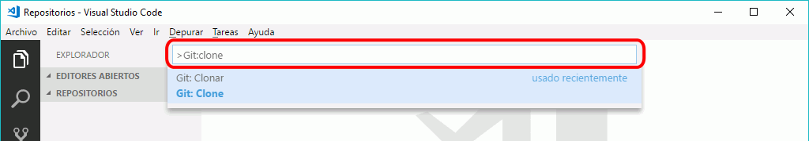
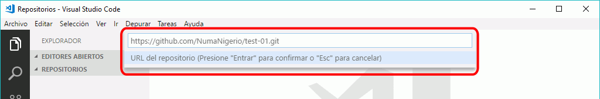
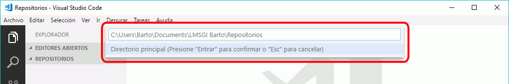
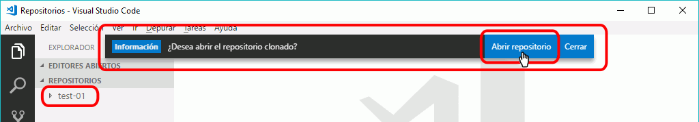
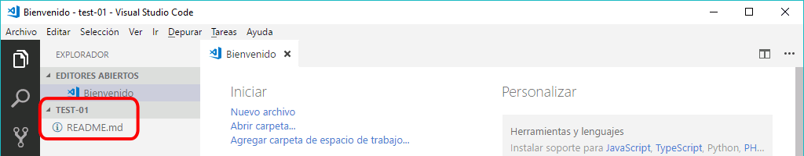

En esta lección se explica cómo empezar a trabajar en un repositorio git desde Visual Studio Code. Aunque podemos crear el repositorio con Visual Studio Code en nuestro ordenador y después subirlo a GitHub, en esta lección se explica cómo clonar en nuestro ordenador un repositorio ya existente en GitHub.
Requisitos
Para poder trabajar repositorios en GitHub con Visual Studio Code necesitamos:
Para clonar localmente con Visual Studio Code un repositorio de GitHub:
Cree un directorio donde se guardarán los repositorios:

Abra el directorio en Visual Studio Code (menú Archivo > Abrir carpeta ...):

Para clonar el repositorio necesitará dos rutas (el origen y el destino):
La URL de repositorio, que se puede copiar desde el propio repositorio haciendo clic en el botón "Clone or download".
Esta URL es la misma URL que aparece en el navegador pero terminada en .git.
En la captura de ejemplo, la URL de origen es https://github.com/NumaNigerio/test-01.git

El directorio de destino, que se puede copiar en el Explorador de Windows (más exactamente, se trata del directorio en el cual se va a crear la carpeta que contendrá la copia del repositorio.
En la captura de ejemplo, el directorio de destino es https://github.com/NumaNigerio/test-01.git

En Visual Studio abra la ventana de comandos con Ctrl+Alt+p

Escriba el comando git:clone y pulse Intro:

Escriba la URL del repositorio de origen y pulse Intro:

Escriba la ruta del directorio que contendrá la copia y pulse Intro:

En unos segundos se mostrará la carpeta del repositorio clonado en la barra dle explorador y se ofrecerá la posibilidad de abrir la carpeta del repositorio clonado. Haga clic en "Abrir repositorio".

Visual Studio Code abrirá la carpeta del repsositorio clonado, mostrando su contenido (en el ejemplo, el repositorio contiene únicamente el fichero README.md.

Realizar commits en el repositorio remoto
En git, un commit es un conjunto de cambios que se realizan en los ficheros del repositorio.
En Visual Studio Code podemos realizar commits, que se guardan en el repositorio local. Para sincronizar nuestros cambios en el repositorio, debemos identificarnos como usuario del repositorio.
Esa identificación se guarda como credencial de Windows, por lo que si estamos utilizando un ordenador al que tienen acceso otras personas, es muy importante que eliminemos la credencial antes de abandonar el ordenador o nos arriesgamos a que otro usuario nos suplante y acceda a los repositorios remotos.
El proceso en Visual Studio Code sería el siguiente:
Modifique los archivos del repositorio o añada nuevos archivos
Abra la barra lateral de Control de código fuente
Seleccione los ficheros cuyos cambios formarán parte del commit (puede elegir todos los ficheros modificados o sólo una parte) haciendo clic en el icono +
Escriba el mensaje descriptivo del commit y pulse Ctrl+Intro
El commit realizado localmente se indicará en la barra lateral inferior
Puede realizar varios commits
Haga clic en el icono de la barra lateral inferior para sincronizar el repositorio remoto con el local
La primera vez que lo hagamos, deberemos introducir el usuario y contraseña de GitHub.
Una vez realizada la sincronización, el contador se mostrará a cero.
Puede comprobar visitando el repositorio remoto en el navegador que se han realizado los cambios.
Borrar credencial de Windows
la identificación en GitHub que utiliza Visual Studio Code se guarda como credencial de Windows, por lo que si estamos utilizando un ordenador al que tienen acceso otras personas, es muy importante que eliminemos la credencial antes de abandonar el ordenador o nos arriesgamos a que otro usuario nos suplante y acceda a los repositorios remotos.
Para borrar la credencial:
Abra el panel de control clásico (Menú de inicio > panel de control)